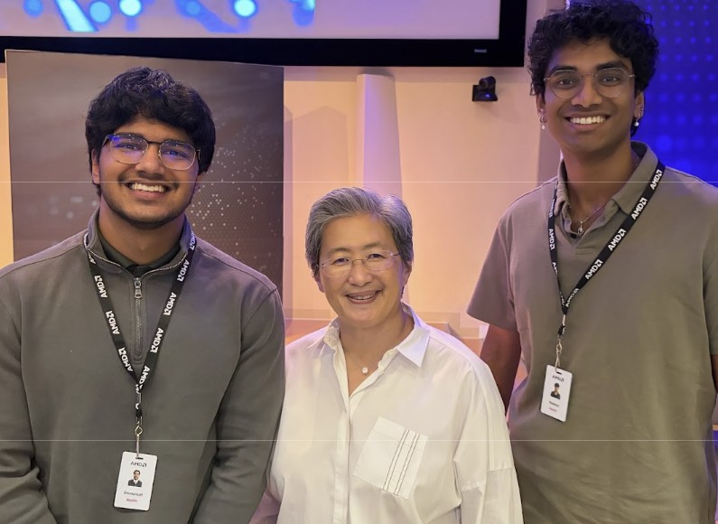
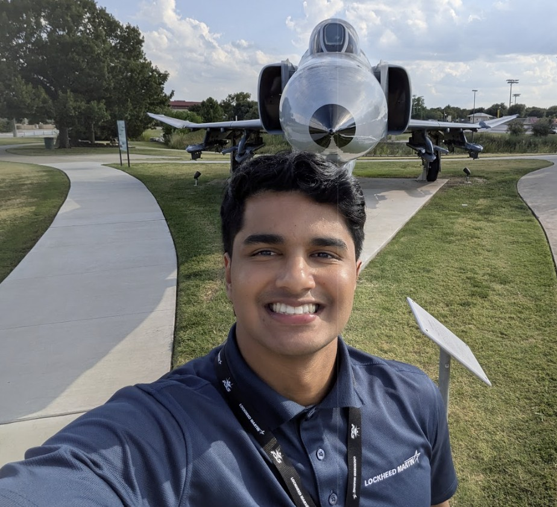
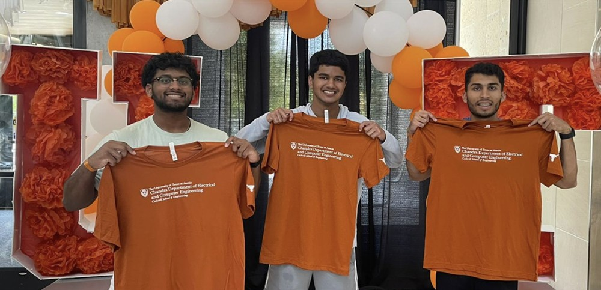
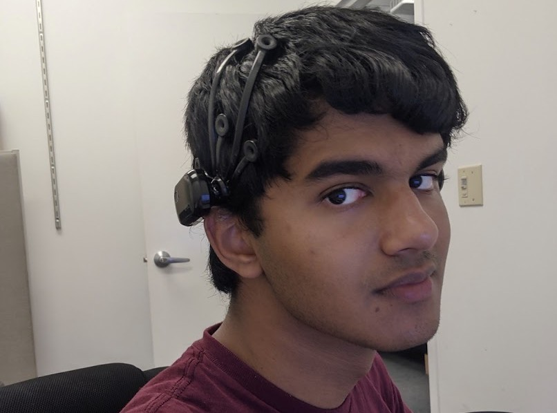
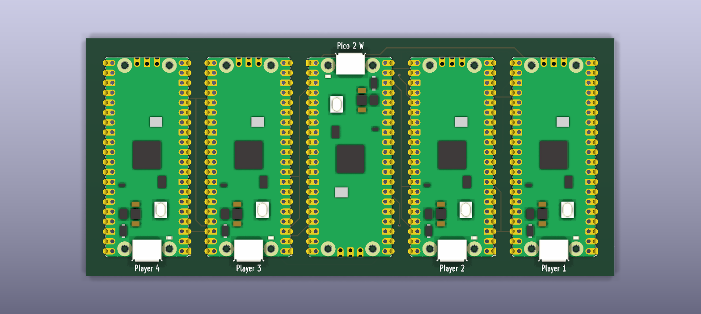
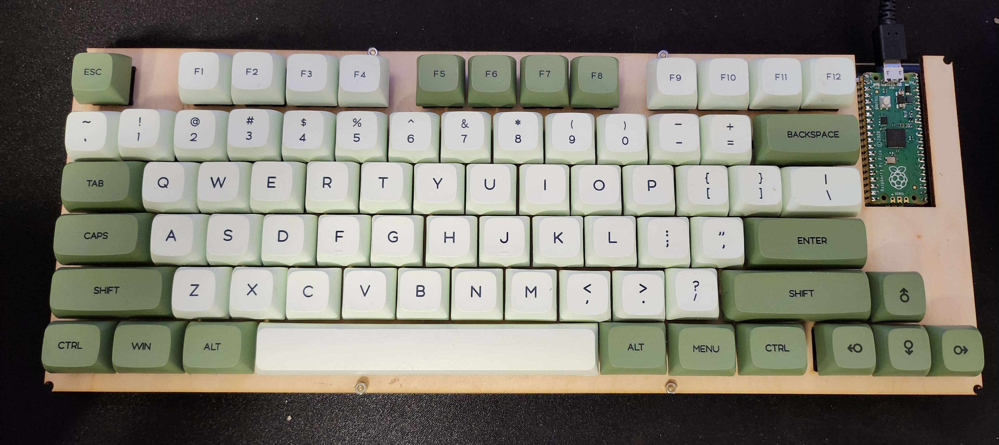
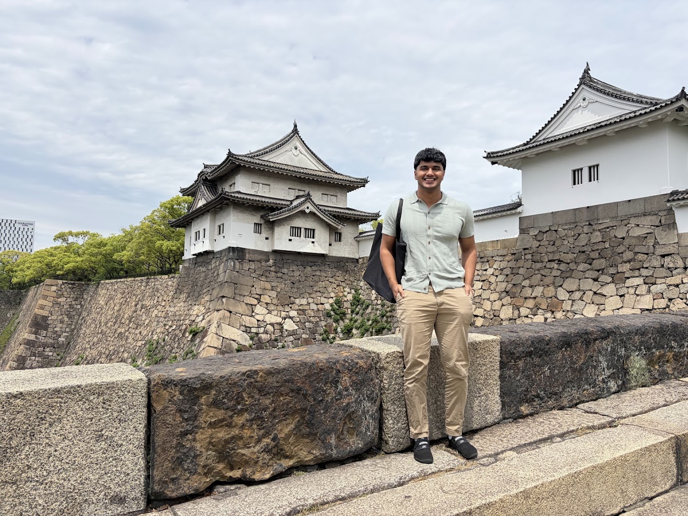
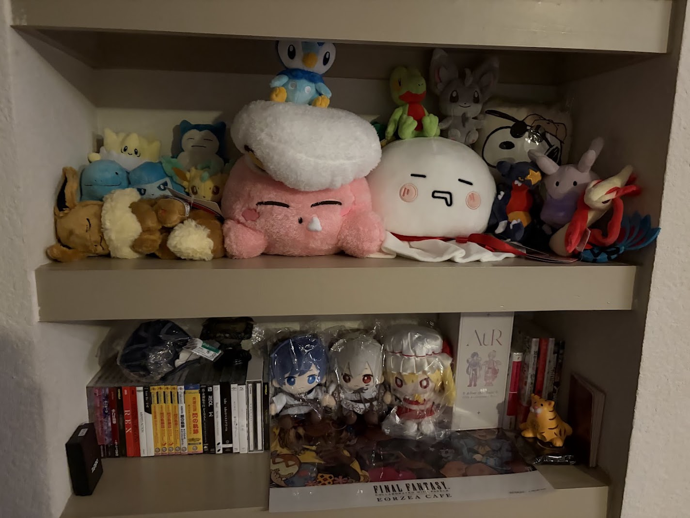

DoomV
A RISC-V CPU simulator in C++ that boots Ubuntu, runs DOOM, and passes all 663 official architecture tests.
View on GitHub →I like understanding complex software and hardware systems.
Incoming Implant Software Engineer @ NeuralinkUT Austin ECE ’27
Upcoming CPUs, flight software, and brain-computer interfaces.

SoC Virtual Model Development Co-op
Worked on x86, RISC-V, AVX10, and the instructions used for LLM inference in SimNow, the simulator AMD uses to test chips before they exist.

Embedded Software Engineering Intern
Wrote software for the F-35's fire control systems. I can't say much more than that.

Teaching Assistant
Mentoring students and grading in ES 301, an engineering design course.

Undergraduate Research Assistant
Built data processing pipelines for millions of lines of Emotiv EEG data from 25+ patients.
I build things to find out how they work: a CPU, a console, a keyboard.
A RISC-V CPU simulator in C++ that boots Ubuntu, runs DOOM, and passes all 663 official architecture tests.
View on GitHub →A Game Boy emulator I wrote in C, running live right there. Load a ROM you own and play.
Arrows · Z / X for A / B · A / S for Start / Select
View on GitHub →
Play a Nintendo Switch from anywhere with any keyboard or controller, using five Raspberry Pi Picos talking over SPI.
View on GitHub →
A 77-key keyboard I designed from scratch: KiCad PCB, laser-cut case, and KMK firmware on a Raspberry Pi Pico.
View on GitHub →My life off the résumé.

